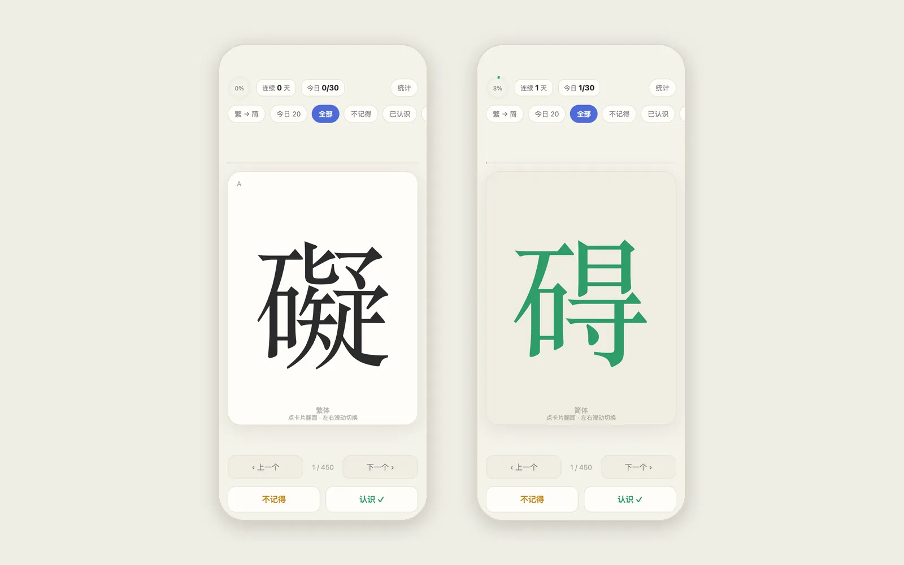

PROJECT NOTES / 2026.06
Traditional → Simplified Flashcards
Offline spaced-repetition flashcards for 450 traditional–simplified character pairs

I made this deck alongside Shigu: 450 traditional characters to turn back into their simplified forms. Tap a card to flip it, swipe to move on, and mark each one as remembered or not. It also runs the other way, from simplified to traditional.
The schedule stays simple on purpose. A card I forget comes back the same day. A card I remember waits 1, 3, 7, 16 and then 35 days. Each day brings the reviews that are due plus 20 new cards, a number I can change, and a small ring fills up as I go. When one simplified character stands for several traditional ones, the way 發 and 髮 both became 发, the card shows the whole group.
The entire app is a single HTML file. Added to the home screen, it works offline, and progress lives in the phone's local storage. There is an export button for the day I switch phones.